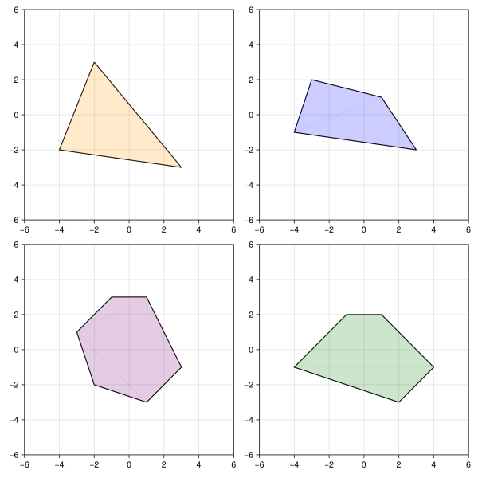
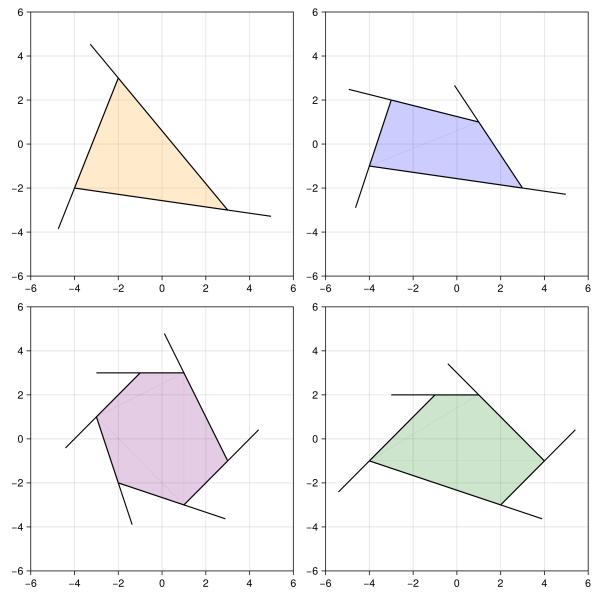
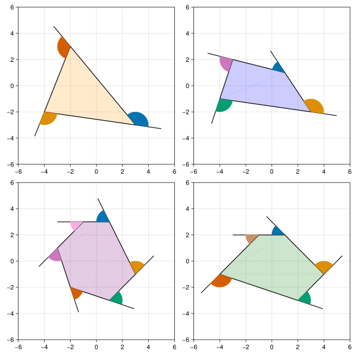
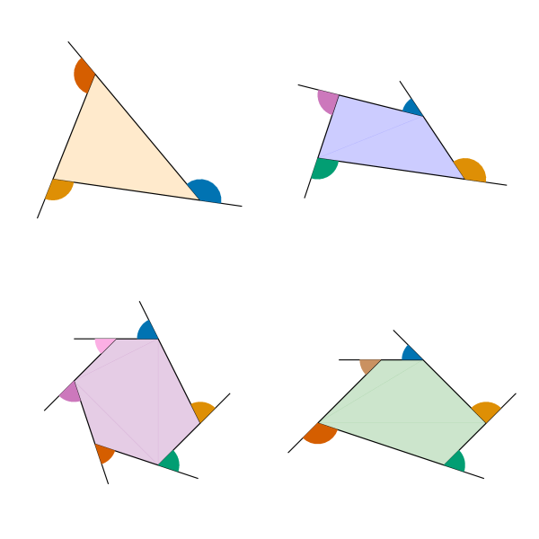

using Pkg;
Pkg.activate(".");
using CairoMakie;The exterior angles of a polygon make a circle
Overview
I recently saw a fun little GIF from a weekly news email I get called the New Paper. It shows a simple plot of the exterior angles of a few polygons. As the polygons shrink, the exterior angles combine to eventually make a circle, which shows a simple graphical example of how the exterior angles of any polygon add to \(2\pi\).
I thought I’d try to recreate this little GIF with my favorite plotting library Makie.jl.
Setting up
Basically, we can start by getting the plots of each polygon set. We can then animate the sides of the polygons shrinking.
To start we are going to need a Figure with 4 axes:
f = Figure(resolution=(800,800));
axes = [
Axis(f[1,1]) Axis(f[1,2]);
Axis(f[2,1]) Axis(f[2,2])
]
for ax in axes ax.limits=(-6,6,-6,6) endWe can now list the vertices for each polygon:
poly11 = [(-2.0,3.0),(3.0,-3.0),(-4.0,-2.0),(-2.0,3.0)];
poly12 = [(-3.0,2.0),(1.0,1.0),(3.0,-2.0),(-4.0,-1.0),(-3.0,2.0)];
poly21 = [(-1.0,3.0),(1.0,3.0),(3.0,-1.0),(1.0,-3.0),(-2.0,-2.0),(-3.0,1.0),(-1.0,3.0)];
poly22 = [(-1.0,2.0),(1.0,2.0),(4.0,-1.0),(2.0,-3.0),(-4.0,-1.0),(-1.0,2.0)];where poly11 is the polygon in the 1st row and 1st column. Plotting these lines on each respective axis, we get:
lines!(axes[1,1],poly11,color=:black);
lines!(axes[1,2],poly12,color=:black);
lines!(axes[2,1],poly21,color=:black);
lines!(axes[2,2],poly22,color=:black);
poly!(axes[1,1],poly11,transparency=true,color=RGBAf(1.0,0.6,0.0,0.2));
poly!(axes[1,2],poly12,transparency=true,color=RGBAf(0.0,0.0,1.0,0.2));
poly!(axes[2,1],poly21,transparency=true,color=RGBAf(0.5,0.0,0.5,0.2));
poly!(axes[2,2],poly22,transparency=true,color=RGBAf(0.0,0.5,0.0,0.2));
display(f)
These are obviously not exactly the polygons in the GIF, but they are generally similar and use nice easy vertex coordinates. Now, in order to accentuate the exterior angles, the GIF uses lines which extend beyond the vertices. To achieve this, we can consider each line segment and shift the first vertex some distance in the opposite direction of the second vertex. To do so, we should shift adjust our polygon representation to separate each line segment:
lpoly11 = [[poly11[i],poly11[i+1]] for i in 1:length(poly11)-1];
lpoly12 = [[poly12[i],poly12[i+1]] for i in 1:length(poly12)-1];
lpoly21 = [[poly21[i],poly21[i+1]] for i in 1:length(poly21)-1];
lpoly22 = [[poly22[i],poly22[i+1]] for i in 1:length(poly22)-1];
display(lpoly11)3-element Vector{Vector{Tuple{Float64, Float64}}}:
[(-2.0, 3.0), (3.0, -3.0)]
[(3.0, -3.0), (-4.0, -2.0)]
[(-4.0, -2.0), (-2.0, 3.0)]We can now the vector between the first and second indices of each line segment and shift our first vertex by the negative of that vector. That is a mouthful but more easily written mathematically. If we consider a single line segment with vertices \(v_1\) and \(v_2\), we can calculate the distance between them \(d = v_2 - v_1\) such that \(v_1 + d = v_2\) and then redefine our first vertex in the opposite direction as \(v_1^* = v_1 - l\frac{d}{\|d\|}\) where \(l\) is the length of the external line. This boils down to the following:
function shift_first_vertices!(lpoly, l=2)
for line in lpoly
v1 = collect(line[1]); v2 = collect(line[2])
d = v2 - v1
v1star = v1 - l*d/sqrt(d[1]^2+d[2]^2)
line[1] = tuple(v1star...)
end
end
shift_first_vertices!(lpoly11)
shift_first_vertices!(lpoly12)
shift_first_vertices!(lpoly21)
shift_first_vertices!(lpoly22)
function plot_line_segments!(ax,lpoly)
lines = []
for line in lpoly push!(lines,lines!(ax,line,color=:black)) end
return lines
end
plot_line_segments!(axes[1,1],lpoly11)
plot_line_segments!(axes[1,2],lpoly12)
plot_line_segments!(axes[2,1],lpoly21)
plot_line_segments!(axes[2,2],lpoly22)
display(f)
Once we have these lines in place, we can add the external angles. Ironically, the best tool in Makie for these angle drawings is the poly! function which plots a filled polygon from some given vertices. Thus, we need to compute the vertices of the arc for each angle of each polygon.
This computation can be done by taking two connected line segments \(d_1\) and \(d_2\), identifying the angle between them using the law of cosines \(\arccos(d_1 \cdot d_2)\), and sampling points along the arc of given radius \(l\). Sampling the arc requires a little change of coordinates to center the points around the vertex connecting the two line segments and to rotate the standard \(x\) and \(y\) coordinates to align \(x\) with \(d_1\) and \(y\) with \(d_1^\perp\). This is, in my opinion, the most challenging part of the plot.
function angle_vertices(line1,line2,l=1)
v1 = collect(line1[1])
v2 = collect(line1[2]) # Shared vertex
v3 = collect(line2[2])
d1 = v2-v1
d2 = v3-v2
# Line segment directions (normalized
d1 ./= sqrt(d1[1]^2+d1[2]^2)
d2 ./= sqrt(d2[1]^2+d2[2]^2)
d1perp = [d1[2],-d1[1]]
vertex = tuple(v2...)
# Computing angle between lines, then sampling arc points
angle = acos(d1'*d2)
angle = isnan(angle) ? 0.0 : angle
angles = range(0, angle, length=10)
# arc has radius l, origin at v2, "x"-direction is d1, "y"-direction is d1perp
arc_points = [tuple(@.( v2 - l*(d1*cos(a) + d1perp*sin(a)))...) for a in angles]
vertices = vcat(vertex,arc_points,vertex)
return vertices
end
function plot_arcs!(ax,lpoly)
arcs = []
colors = to_colormap(:seaborn_colorblind)
for i in 1:length(lpoly)
if i+1 > length(lpoly) # The angle between the last line segment and first
color = colors[i+1]
arc_vertices = angle_vertices(lpoly[i],lpoly[1])
else
color = colors[i]
arc_vertices = angle_vertices(lpoly[i],lpoly[i+1])
end
push!(arcs,poly!(ax,arc_vertices,color=color))
end
return arcs
end
plot_arcs!(axes[1,1],lpoly11)
plot_arcs!(axes[1,2],lpoly12)
plot_arcs!(axes[2,1],lpoly21)
plot_arcs!(axes[2,2],lpoly22)
display(f)
Now, removing the axes decorations, we have a clean plot of (almost) the first frame of the GIF:
function remove_axis_decor!(ax)
ax.topspinevisible = false; ax.bottomspinevisible = false
ax.leftspinevisible = false; ax.rightspinevisible = false
ax.xgridvisible = false; ax.ygridvisible = false
ax.xticksvisible = false; ax.yticksvisible = false
ax.xticklabelsvisible = false; ax.yticklabelsvisible = false
end
remove_axis_decor!.(axes)
display(f)
Animating
With the initial plot now done, to complete the animation, it remains to shrink each polygon until the angles come together to form a circle. This can be simply done (with slight error) by computing the center of each polygon via averaging, centering the vertices around that center, then shrinking the vertices proportional to the number of steps in the animation. Putting everything together:
# Initialize
f = Figure(resolution=(800,800));
axes = [
Axis(f[1,1]) Axis(f[1,2]);
Axis(f[2,1]) Axis(f[2,2])
]
for ax in axes ax.limits = (-6,6,-6,6) end
remove_axis_decor!.(axes)
poly11 = [(-2.0,3.0),(3.0,-3.0),(-4.0,-2.0),(-2.0,3.0)];
poly12 = [(-3.0,2.0),(1.0,1.0),(3.0,-2.0),(-4.0,-1.0),(-3.0,2.0)];
poly21 = [(-1.0,3.0),(1.0,3.0),(3.0,-1.0),(1.0,-3.0),(-2.0,-2.0),(-3.0,1.0),(-1.0,3.0)];
poly22 = [(-1.0,2.0),(1.0,2.0),(4.0,-1.0),(2.0,-3.0),(-4.0,-1.0),(-1.0,2.0)];
# Polygon average centers
function compute_center(poly)
vec(sum(hcat(collect.(poly)...),dims=2)./length(poly))
end
c11 = compute_center(poly11)
c12 = compute_center(poly12)
c21 = compute_center(poly21)
c22 = compute_center(poly22)
function shrink_polygon(poly,c,step,steps)
new_vertices = similar(poly)
for i in eachindex(poly)
vertex = collect(poly[i]) - c
new_vertex = @. vertex*((steps-step)/(steps))
new_vertices[i] = tuple((new_vertex + c)...)
end
return new_vertices
end
# Animation (somewhat inefficient since it doesn't use Observables)
steps = 120
record(f, "gifs/angle_gif.gif", vcat(1:(steps-1),fill(steps-1,steps÷4),(steps-1):-1:1)) do t
empty!(axes[1,1].scene.plots)
empty!(axes[1,2].scene.plots)
empty!(axes[2,1].scene.plots)
empty!(axes[2,2].scene.plots)
npoly11 = shrink_polygon(poly11,c11,t,steps)
npoly12 = shrink_polygon(poly12,c12,t,steps)
npoly21 = shrink_polygon(poly21,c21,t,steps)
npoly22 = shrink_polygon(poly22,c22,t,steps)
lpoly11 = [[npoly11[i],npoly11[i+1]] for i in 1:length(npoly11)-1];
lpoly12 = [[npoly12[i],npoly12[i+1]] for i in 1:length(npoly12)-1];
lpoly21 = [[npoly21[i],npoly21[i+1]] for i in 1:length(npoly21)-1];
lpoly22 = [[npoly22[i],npoly22[i+1]] for i in 1:length(npoly22)-1];
shift_first_vertices!(lpoly11)
shift_first_vertices!(lpoly12)
shift_first_vertices!(lpoly21)
shift_first_vertices!(lpoly22)
poly!(axes[1,1],npoly11,transparency=true,color=RGBAf(1.0,0.6,0.0,0.2));
poly!(axes[1,2],npoly12,transparency=true,color=RGBAf(0.0,0.0,1.0,0.2));
poly!(axes[2,1],npoly21,transparency=true,color=RGBAf(0.5,0.0,0.5,0.2));
poly!(axes[2,2],npoly22,transparency=true,color=RGBAf(0.0,0.5,0.0,0.2));
plot_arcs!(axes[1,1],lpoly11)
plot_arcs!(axes[1,2],lpoly12)
plot_arcs!(axes[2,1],lpoly21)
plot_arcs!(axes[2,2],lpoly22)
plot_line_segments!(axes[1,1],lpoly11)
plot_line_segments!(axes[1,2],lpoly12)
plot_line_segments!(axes[2,1],lpoly21)
plot_line_segments!(axes[2,2],lpoly22)
end